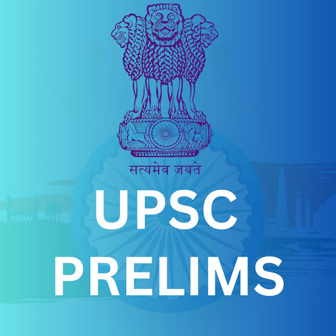

Having a curated and limited set of books is the key to clear UPSC. Here is the highly recommended standard booklist, subject by subject, verified by rank holders.

Minimize your resources, maximize your revisions. Here are the core books required for General Studies:
| Subject | Book Name | Author / Publication | Recommended Category |
|---|---|---|---|
| Polity | Indian Polity | M. Laxmikanth | Prelims + Mains (GS 2) |
| Modern History | A Brief History of Modern India | Spectrum Publication | Prelims + Mains (GS 1) |
| Ancient & Medieval | Ancient and Medieval India | Poonam Dalal Dahiya (or Old NCERT) | Prelims + Mains (GS 1) |
| Geography | Certificate Physical and Human Geography | G.C. Leong (with NCERT Class 11 & 12) | Prelims + Mains (GS 1) |
| Economy | Indian Economy (or Vivek Singh) | Ramesh Singh | Prelims + Mains (GS 3) |
| Environment | Environment Catalog | Shankar IAS Academy | Prelims + Mains (GS 3) |
| Ethics | Lexicon for Ethics, Integrity & Aptitude | Chronicle Publications | Mains (GS 4) |
| Art & Culture | Indian Art and Culture | Nitin Singhania | Prelims + Mains (GS 1) |
| Security & Disaster | Challenges to Internal Security of India | Ashok Kumar | Mains (GS 3) |
Before reading standard references, build your foundation with these NCERTs:
Read standard materials and check your preparation with PYQs.